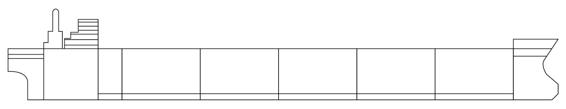

Bulkheads
I have already mentioned bulkheads several times in this chapter. Let's get more specific about the role of bulkheads in cloud-native systems. In the first chapter, we discussed how monolithic systems are their own bottleneck to advancement because they must be deployed as a whole, even for the smallest of changes. The natural reaction to this reality is to batch up changes and thus produce a bottleneck. This reaction is driven by a lack of confidence that the system will remain stable in the face of change. This lack of confidence is rooted in the fact that monoliths are prone to catastrophic failures because a failure in one component can infect the whole system. The problem is that monoliths have no natural system bulkheads. Ultimately, monolithic systems mature and evolve at a glacial pace, because the feedback loop is protracted by this bottleneck and lack of confidence.
The solution is to instill confidence by decomposing a system into bounded isolated components. We can reason about well-bounded components much more easily. Conversations about the functionality of bounded components are much more coherent. We can be far more certain that we understand the implications and side effects of any controlled change to a bounded component. Yet it is inevitable that there will be failures, both human and technical. We strive to minimize this potential with bounded components, but we design for failure and make preparations to recover quickly when failures do occur. Well-isolated components make the system as a whole resilient to these failures by containing the failures and limiting the blast radius to a single component, thus providing teams with breathing room to rapidly respond and recover from the failure.

The apt analogy for bounded isolated components is the bulkhead. As depicted in the preceding diagram, ships are divided into compartments that are separated by walls, known as bulkheads, to form watertight chambers. A breach in the hull will contain the flooding to the affected chambers to help prevent the ship from sinking. Unfortunately, it is not enough to just have bulkheads; they must be properly designed. The Titanic is the classic example of poorly designed bulkheads. Its bulkheads were not watertight, allowing water to flow from compartment to compartment over the top of the bulkheads and we all know how the story ends.
A primary focus of this book is dedicated to designing for failure by creating proper bulkheads for our cloud-native components. This is where much of the rethinking lies. We will be using event streaming and data replication as the implementation mechanisms for isolating components from each other and cover those patterns in depth throughout the book.